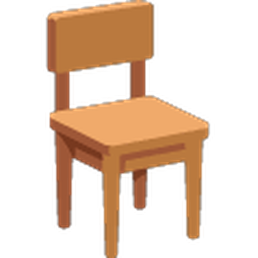
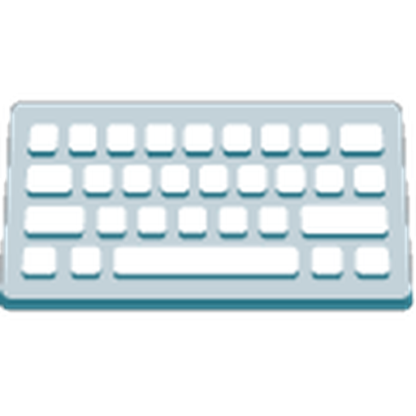
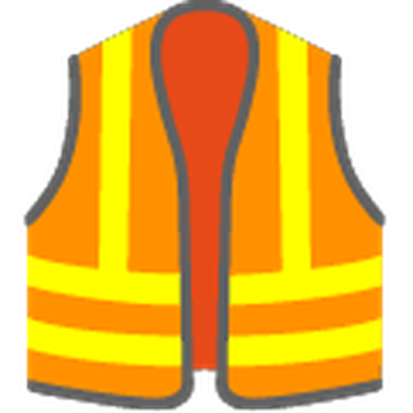
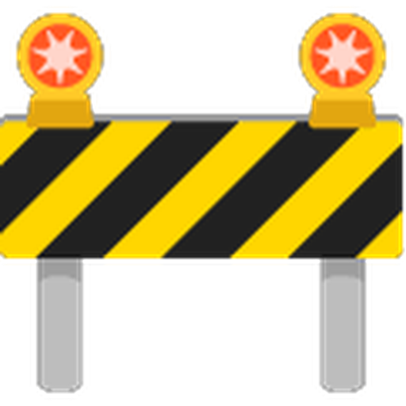
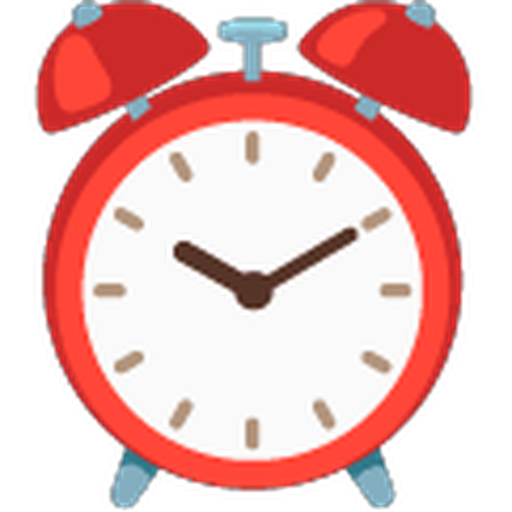
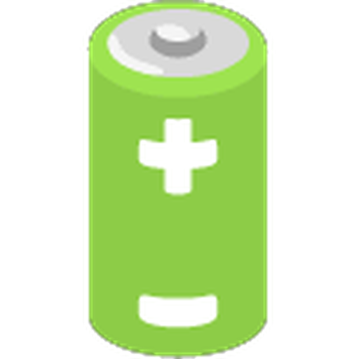
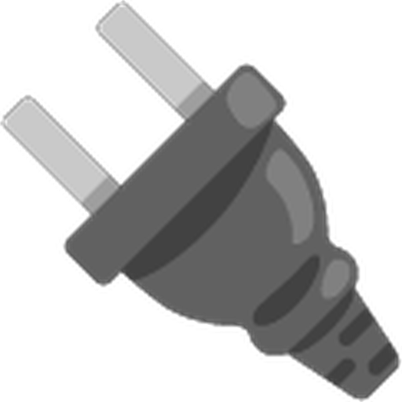
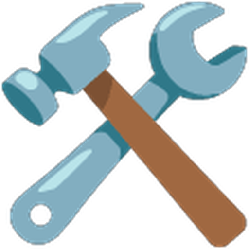
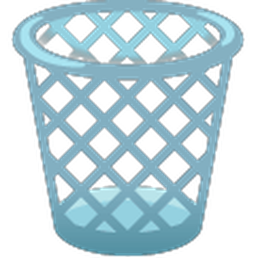

|
|
Volver. |
|
PLAN DE PREVENCIÓN · RECYCLON IDENTIDICACIÓN DE RIESGOSEn este apartado se identifican los principales riesgos a los que puede estar expuesto el personal de Recyclon en su trabajo diario, tanto en tareas de oficina como en la manipulación de material y mobiliario. Se agrupan por categorías para facilitar su análisis y la posterior aplicación de medias preventivas |
|
7
categorías |
23
riesgos identificados |
5
de nivel alto |
| Ergonómicos 4 | Físico 3 | Psicosociales 3 | Químicos 3 | Eléctricos 4 | Informáticos 5 |
| Organizativos 1 | |||||
|
La etiqueta de cada riesgo indica su nivel según la tabla de evaluación del siguiente apartado. |
|||||
|
 |
Riesgos Ergonómicos |
||
| Estos riesgos están relacionados con la forma en que se trabaja y con el diseño del puesto. Aparecen de forma gradual y, si no se corrigen, pueden convertirse en molestias o lesiones persistentes. | |||
|
 Pasar muchas horas sentadoLos trabajadores de oficina pasan gran parte del día delante del ordenador, lo que puede provocar dolores de espalda y cuello. |
Posturas inadecuadasSi la silla, la mesa o la pantalla no están bien colocadas, pueden aparecer molestias en la espalda y los hombros. |
 Uso intensivo del teclado y el ratónRepetir los mismos movimientos durante muchas horas puede causar dolor en las muñecas y las manos. |
Fatiga visualMirar la pantalla durante mucho tiempo puede provocar sequedad en los ojos, visión borrosa y dolor de cabeza. |
||
|
Medidas relacionadas: Prevención de riesgos laborales |
|
 |
Riesgos físicos |
||
| Se derivan del entorno de trabajo y de la manipulación de material y mobiliario. Son frecuentes en las tareas de almacenamiento y traslado, pero también pueden darse en la oficina. | |||
|
 Caídas, golpes y tropiezosTropiezos con objetos, cables o materiales colocados en zonas de paso. |
Lesiones al manipular mobiliarioPosibles sobreesfuerzos al levantar o trasladar mesas, sillas y otros objetos pesados. |
Caída de objetos almacenadosMobiliario o material mal apilado que puede desplomarse y golpear a una persona. |
|
Medidas relacionadas: Prevención de riesgos laborales - Seguridad física de las instalaciones. |
Riesgos psicosociales |
|||
| Tienen que ver con la organización del trabajo y las relaciones entre compañeros. Aunque no son visibles a simple vista, afectan al bienestar, la concentración y el rendimiento del personal. | |||
|
 Estrés por las fechas de entregaTener que terminar una página web o una aplicación en poco timepo puede generar mucha presión. |
Cansancio mental por exceso de trabajoAcumular tareas y programar o resolver errores durante muchas horas requiere mucha concentración y puede provocar agobio y agotamiento. |
Conflictos entre compañerosUna mala comunicación o los desacuerdos al trabajar en equipo pueden generar conflictos y un mal ambiente laboral. |
|
Medidas relacionadas: Prevención de riesgos laborales |
Riesgos Químicos |
|||
| Aparecen por el contacto con polvo, producto de limpieza o sustancias liberadas por equipos deteriorados. Se previenen con un uso correcto de los productos y con una buena ventilación. | |||
Polvo acumulado en los equiposEl polvo del interior de los ordenadores puede pasar al aire al limpiarlos y provocar molestias respiratorias. |
Productos de limpiezaUtilizar productos para limpiar pantallas, teclados y otros equipos sin seguir las instrucciones, o tocarlos ocn la piel, puede causar irritaciones o reacciones en la piel y los ojos. |
 Gases de baterías dañadasSi la batería de un portátil se estropea, se hincha o se sobrecalienta, puede liberar sustancias peligrosas. Por eso no se debe manipular y hay que avisar a una persona responsable. |
|
Medidas relacionadas: Prevención de riesgos eléctricos y químicos |
Riesgos eléctricos |
|||
| Están asociados a la instalación eléctrica y al uso de los equipos conectados. Sus consecuencias pueden ser graves, por lo que conviene revisar con frecuencia el estado de cables, enchufes y reglatas. | |||
Cables dañados o expuestosTocar un cable con el aislamiento roto puede provocar una descarga eléctrica. |
 Enchufes en mal estadoUtilizar enchufes rotos o deteriorados puede causar descargas eléctricas o incluso incendios. |
Sobrecarga de regletasConectar demasiados ordenadores, monitores y otros aparatos a una misma regleta puede provocar sobrecalentamiento y un incendio. |
|
 Manipulación de equipos conectadosAbrir un ordenador o reparar sus componentes sin desconectarlo correctamente puede provocar una descarga eléctrica o dañar el equipo. |
||
|
Medidas relacionadas: Prevención de riesgos eléctricos y químicos |
Riesgos informáticos |
|||
| Afectan a los equipos, las cuentas y la información de la empresa, incluidos los datos de clientes y proveedores. Son los más relevantes para Recyclon, porque casi todo el trabajo depende del ordenador y de la información comercial. | |||
Acceso no autorizadosAcceso a equipos, cuentas o datos por parte de personas que no tienen permiso para ello |
 Pérdida de informaciónBorrado accidental, fallos de un equipo o falta de copias de seguridad que hacen perder datos importantes. |
Ataques de malware o phishingVirus, correos fraudulentos o enlaces sospechosos que ponen en peligro los equipos y las cuentas. |
Filtración de datos de clientes y proveedoresQue la información personal o comecial llegue a perosnas ajenas, con las consecuencias legales y de imagen que ello supone. |
Avería o fallo de los equipos informáticosUn equipo que deja de funcionar puede interrumpir el trabajo y poner en riesgo la información que contiene. |
|
Medidas relacionadas: Prevención de riesgos informáticos - Formación y comunicación. |
Riesgos organizativos |
|||
| Se derivan de la forma en que se administra el trabajo diario. Su impacto es menor, pero conviene tenerlos presentes. | |||
Fallos en la gestión horaria (fichajes)Errores en el registro de la jornada o en la administración de los horarios del personal. |
|
Medidas relacionadas: Responsabilidad |
|
Los riesgos descritos no son los mismos para todos los puestos ni tienen la misma gravedad. Por ello, en
el siguiente apartado se evaluará y clasificará cada uno srgún su probabilidad y sus consecuencias, para
decidir qué medidas preventivas se aplican primero. Conocerlos y comunicar cualquier situación de riesgo
a tiempo es la mejor forma de evitar accidentes.
Si detectas alguno de estos riesgos,o ya se ha producido un incidente, avisa cuanto antes a la persona responsable para que quede registrado y se actúe según el procedimiento de gestión de incidentes. |
|
|
Volver arriba. |
Siguiente. |
|